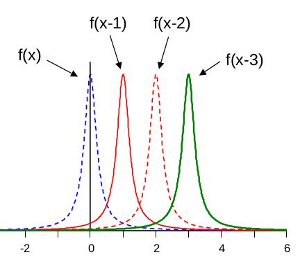
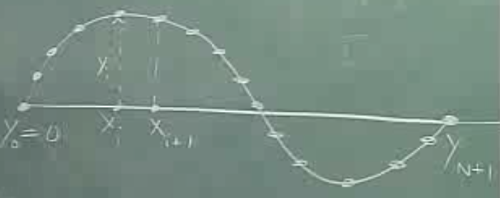
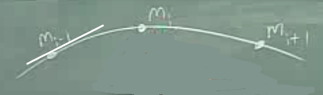
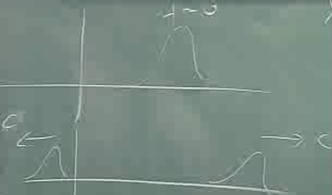
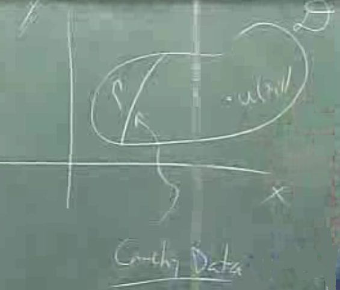
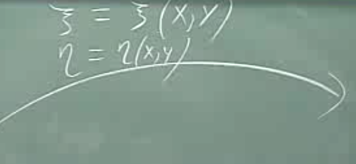
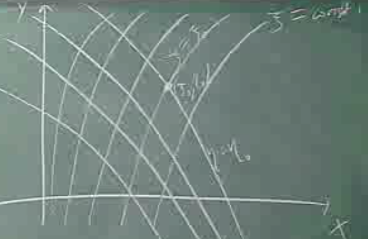
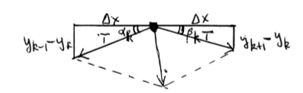

Dalga Denklemi (Wave Equation)
Matematiksel açıdan bir dalga hareket eden herhangi bir fonksiyondur. Bir fonksiyonu mesela sağa taşımak için ona geçilen değeri $x$'den $x-x_0$'a değiştirmek yeterlidir, ki $x_0$ pozitif bir sayı [5].

Degil mi? Bunu kendimiz kontrol edebiliriz,
x = np.linspace(-5,5,100)
y = -x**2 +3
plt.plot(x,y)
plt.grid(True)
plt.xlim(-4,4)
plt.ylim(-1,3)
plt.savefig('compscieng_app45cfd1_08.png')

x = np.linspace(-5,5,100)
x0 = 3
y = -(x-x0)**2 +3
plt.plot(x,y)
plt.grid(True)
plt.xlim(-4,4)
plt.ylim(-1,3)
plt.savefig('compscieng_app45cfd1_09.png')

Fonksiyonu $x_0$ kadar sağa taşımış olduk.
Bu taşımanın zaman içinde sürekli sağa olacak şekilde olmasını isteseydik, yani bir "dalga" yaratmak isteseydik, o zaman $x_0 = v t$ kullanabilirdik, bu durumda zaman geçtikçe yer değişim artardı, böylece dalganın akma görüntüsü ortaya çıkardı.
O zaman diyebiliriz ki $f(x-vt)$ ileri, ya da sağa doğru aktarılan (propagate) bir dalgayı temsil eder, $v$ dalga hızı olarak görülebilir. Dışarıdan parametre aktarımı karışıklık yaratıyorsa, dalgayı bir fonksiyon olarak göstermek için $u(x,t)$ tanımlarız [6, sf. 420], ve
$$ u(x,t) = (x - ct) \qquad (3) $$
$t=0$ anında dalganın "profili" $f(x)$, bu sağa taşınan şekildir, "bozulmadır (disturbence)". Önemli bir nokta üstteki tarif edilen taşımanın çarpıtma, kırılma olmadan gerçekleştiği, bu bariz ama yine de üzerinde basalım, fonksiyon ne ise o halde taşınıyor. Tüm dalgalar böyle değil, gerçek dünyada da böyle değil bildiğimiz gibi, üstteki lineer dalgalar, ya da lineer kısmi diferansiyel denklemlerin çözümü olan dalga profilleri bu şekilde davranıyor. Giderken kırılan, çarpıtmaya uğrayan dalgalar gayrı-lineer süreçlerin bir sonucu.
Eğer üstteki denklemi sonuç olarak veren bir model görmek istersek, $u_x$ ve $u_t$ hesaplayabiliriz,
$$ u_t = -c f'(x-ct), \quad u_x = f'(x-ct), $$
Buradan hareketle
$$ u_t + c u_x = 0 $$
eşitliğini kurabiliriz. Üstteki bir lineer kısmi diferansiyel denklem ve en basit dalga denklemi. Ona yatay iletim (advection) denklemi deniyor ve genel çözümü (3) ki $f$ turevi alinabilen herhangi bir fonksiyon.
Sinüssel Dalga
En basit (plane wave) ve temel hareket eden dalgalardan bir diğeri sinüssel dalga. Bu dalganın başlangıç hali
$$ y = A \sin \left( \frac{2\pi}{\lambda} x \right) $$
Aslında sadece $\sin x$ denebilirdi, fakat $\lambda$ ile dalga boyunu tanımlamak istiyorsak üstteki eki yapmak gerekir, dikkat edersek $x = 0$'da $\sin(0)$, $x = \lambda$'da $\sin 2\pi$. Böylece periyotu $\lambda$ haline getirmiş olduk [8, sf. 503]. Eğer bu dalgayı sağa kaydırmak istiyorsak, aynı şekilde $x$ değerine ekleme yapma tekniğini uygularız,
$$ y = A \sin \left[ \frac{2\pi}{\lambda} (x - vt) \right] $$
Üstteki form hala $f(x-vt)$ bir anlamda, yani aynı yaklaşımı kullanmış oluyoruz.
Tanım itibariyle tek bir dalganın (wavelength) bir noktadan baştan sona geçmesi bir zaman periyotu $T$'de olur denir, bu tanıma göre hızı görmenin bir diğer yolu $v = \frac{\lambda}{T}$, bu eşitliği üstteki denkleme sokarsak,
$$ y = A \sin \left[ 2\pi \left( \frac{x}{\lambda} - \frac{t}{T} \right) \right] $$
Biraz sabit enflasyonu oldu, $2\pi,\lambda,T$, azaltmak için
$$ k \equiv \frac{2\pi}{\lambda}, \qquad \omega \equiv \frac{2\pi}{T} $$
Böylece iki üstteki denklem
$$ y = A \sin(kx - \omega t) $$
olarak yazılabilir.
Doğal olarak frekans $f = 1/T$. Alternatif formlar $v = \omega / k$, ve $v = \lambda f$ da mümkün.
Ayrıca çoğu hesap yapılırken $\sin$ içeren form kullanılmıyor, $\cos$'lu form alınıp (temelde bir değişiklik yok) bir de Euler formülü $\exp(i\theta) = \cos\theta + i\sin\theta$ üzerinden (ve yükseklik $A$ ile [10])
$$ u(x,t) = A e^{i(kx - \omega t)} $$
geçişi yapılıyor. Ardından yine Euler formülü üzerinden reel kısma dönülünce ($i$ içeren kısım hayali kısım) sonuca varılmış olunuyor. $\exp$ ile işlem yapmanın faydaları var, türevler daha kolay mesela, aynı bazda çarpım işlemleri toplama dönüşüyor, vs.
Dalga Denklemini Türetmek
Önce ip üzerinde titreşimlerin hareketi sonucu olan dalga denklemini türetelim [2,3,4]. Bir ipte dalga onun salınımı ile oluşacak, ve bu salınım sırasında bir anda, tek bir fotoğraf karesinde görüntü alt soldaki gibi olabilir,

İp iki tarafından hareket etmeyen yerlere bağlanmış (duvar mesela) uzunluk $L$, ip materyelinin yoğunluğu $\rho$, ki bu tüm ipin kütlesi bölü uzunluğu olarak ta görülebilir, bu örnekte sabit, ipin gerginliği kuvvet olarak $T$, bu da sabit, ve yerçekimi kuvvetine göre çok daha fazla böylece yerçekim ivmelenmesi $g$'yi yok sayabiliyoruz. Sürtünme yok. Tek boyutta bakıyoruz, $y(x,t)$ ipin bir $x$ noktasındaki dikey yer değişimini gösteriyor.
Denklemi ortaya çıkartmak için aslında Newton'un $F=ma$'sından daha fazlasına ihtiyacımız yok. Üst sağdaki resimde gösterildiği gibi tek bir sonsuç ufak bölgeye odaklanırsak, ya da alt resimde olduğu gibi,

$F$ için gereken net kuvveti ipin iki yanyana noktası arasındaki gerginliğin dikey bileşenlerinin farkı olarak görebiliriz, yani $T(x+\Delta x,t)$ ve $T(x,t)$ kuvvetlerinin dikey bileşen farkı. İki noktadaki acılar da $\theta(x,t)$ ile gösteriliyor, $x+\Delta x$'teki acı $\theta(x+\Delta x)$. Bu dikey bileşenlerin farkını, ya da tüm $y$ kuvvetlerinin toplanını o zaman
$$ \sum F_y = T(x+\Delta x,t) \sin\theta(x+\Delta x,t) - T(x,t) \sin\theta(x,t) $$
ile hesaplayabiliriz. Modeldeki faraziyeler ışığında biliyoruz ki $y/L$ çok küçük, o zaman $\theta$ çok küçük. Demek ki sinüs ifadelerini basitleştirebiliriz, [6]'dan biliyoruz ki
$$ \sin\theta \approx \tan\theta = \partial y / \partial x $$
Demek ki
$$ \sum F_y = T \frac{\partial y}{\partial x} \bigg\vert_{x+\Delta x} - T \frac{\partial y}{\partial x} \bigg\vert_{x} $$
Son geldiğimiz noktada birinci türevler üzerinden bir $x$ farklılığı görüyoruz, bu bize bir türev işlemini daha hatırlatıyor, eğer $\Delta x$ ile bölünme de olsaydı, o zaman ikinci türev elde ettik diyebilirdik,
$$ \frac{ T \frac{\partial y}{\partial x} \bigg\vert_{x+\Delta x} - T \frac{\partial y}{\partial x} \bigg\vert_{x} }{\Delta x} \approx T \frac{\partial^2 y}{\partial x^2} $$
Fakat önemli değil, biraz masajlama yaparsak,
$$ T \frac{\partial y}{\partial x} \bigg\vert_{x+\Delta x} - T \frac{\partial y}{\partial x} \bigg\vert_{x} \approx T \frac{\partial^2 y}{\partial x^2} \Delta x $$
İstenilen sonucu elde ederiz,
$$ \sum F_y \approx T \frac{\partial^2 y}{\partial x^2} \Delta x $$
Diğer taraftan $F=ma$ eşitliğinin sağ tarafına bakarsak, baktığımız ufak bölge için kütle $\rho\Delta x$, yatay ivmelenme ise $y$ yer değişiminin zamana göre ikinci kısmi türevi,
$$ \sum F_y = \rho \Delta x \frac{\partial^2 y}{\partial t^2} $$
Bu son iki denklemi birbirine eşitlersek, $\Delta x$'ler iptal olur,
$$ T \frac{\partial^2 y}{\partial x^2} = \rho \frac{\partial^2 y}{\partial t^2} $$
Sabitleri sağ tarafa taşırsak, ve $c = \sqrt{T / \rho}$ tanımı üzerinden,
$$ \frac{\partial^2 y}{\partial x^2} = \frac{1}{c^2}\frac{\partial^2 y}{\partial t^2} $$
Dalga denklemini elde etmiş olduk.
Alternatif Anlatım
PDE'lerin ortaya çıkabileceği durumlardan biri, ayrıksal parçacıklardan oluşan bir sistemin limite gittiği andır [8]. Bu tür şartlarda ODE'lerden oluşan bir sistem limite giderken bir PDE ortaya çıkartabiliyor. Süreklilik Mekaniğinden (Continuum Mechanics) bir örnek vereceğiz yani.
Sistem ayrıksal başlayacak, süreklilik limitine gidecek. Mesela sıvılar mekaniğinde (fluid mechanics) Euler denklemi, Navier-Stokes denklemleri sıvı sisteminin (şu gibi mesela) süreklilik limitidir. Bu denklemler sıvı içindeki ufak parçacıkları tarif etmezler, sistemin bütününe bakarlar.
Hepimiz Newton Kanunu biliyoruz (ki bu kanun bu derste ihtiyacımız olan yegane fizik bilgisi)
$$ m \frac{d^2x}{dt^2} = F(x) $$
Formül ne diyor? Kütle çarpı ivme eşittir kuvvet. Gayet basit.
Diyelim ki elimizde $N$ tane tane parçacık var, $i=1,..,N$, ve bu parçacıklar birbirleriyle etkileşim halindeler, aralarında bir tür çekim var belki, ya da başka bir kuvvet. O zaman her parçacık için ayrı ayrı hareket kanunu işleyecek. Ve $i$'inci parçacık üzerinde bir kuvvet var, ve bu kuvvet sistemdeki tüm diğer değişkenlerle bir şekilde bağımlı. $x$ tabii ki pozisyon değişkeni. O zaman
$$ m_i \frac{d^2x_i}{dt^2} = F_i(\vec{x}) $$
Dikkat edersek, $F$ fonksiyonuna giren parametre tüm parçacıklar, yani o parçacığın hissettiği kuvvet bir şekilde tüm diğer parçacıklarla alakalı.
Başlangıç Şartı
$i$'inci parçacığın başlangıç konumu
$$ x_i(0) = \hat{x}_i $$
Tipik olarak başlangıç hızı da verilir
$$ \frac{dx_i}{dt}(0) = \hat{v}_i $$
Üstteki bir başlangıç değer problemi (initial value problem). Biz bu derste PDE bazında sınır değerli problemlerle uğraşacağız.
Bu tür başlangıç değer problemleri iyi huyludur, çünkü, mesela bu örnekte 2. derece bir diferansiyel denklem var elimizde, ve bağımlı değişken $x$ var, ve bize verilen koşulu anlamak için alttaki resme bakalım

Bize verilenler, $t=0$ anında $x_i$ noktasının olduğu yere ek olarak (soldaki nokta), bir de o noktadaki eğim bilgisi. Bu tür bilgi verilince, parçacığın hangi yöne gitmeye meyilli olacağını da görmüş oluyoruz. Sanki bir top ateşlenmiş, ve topun ateş ettiği anda nerede olduğuna ek olarak topun namlusunun gösterdiği yer de bize söyleniyor.
Bu iyi huylu bir problem. Sınır değerli denklemler çok daha karmaşık olabiliyor. Bu arada "sınır koşullu" kelimesindeki "sınır" çoğunlukla bir fiziksel şeye tekabül eder, mesela bir ip vardır, ve ipin "sonunda" yani sınırlarında değerin ne olması gerektiği sabitlenir.
Devam edelim. Kurmak istediğimiz model bir tür "gitar teli" modeli.
$y_i$ = $i$'inci parçacığın yüksekliği olsun.

Tel üzerinde bir sürü parçacık var, tel iki ucundan sabitlenmiş durumda. Bu problemde yatay hareketle ilgilenmiyoruz, sadece yukarı / aşağı hareketle ilgileniyoruz. Bir tanım daha:
$$ \Delta x = x_{i+1} - x_i $$
Basitleştirme amacıyla bu tanımı yaptık. Tüm parçacıkların arasındaki mesafeyi sabit, ve aynı olarak aldık. Benzer şekilde
$$ m_i \equiv m $$
Yani tüm parçacıklar aynı kütleye sahip.
Şimdi Newton Kanununu parçacıklara uygulayalım [1].
$$ m \frac{d^2Y_i}{dt^2} = \tau \bigg( \frac{Y_{i+1}- Y_i}{\Delta x} \bigg) - \tau \bigg( \frac{Y_{i}- Y_{i-1}}{\Delta x} \bigg) $$
Bununla ne demiş olduk? $i$'inci parçacığın hissettiği çekimin, o parçacığın sağında ve solunda bağlı olduğu diğer parçacıkla bağının ipteki eğimi ile orantılı olduğunu söylemiş olduk.
$\tau$ her tel için farklı olacak bir gerginlik sabiti, ama belli bir telde, her parçacık için aynı.

Üstteki formül aslında yerel türevin "ucuz" bir yaklaşıksallaması.
Gerginlikle kurulan alaka akla yatkın olmalı, düşünürsek ipte parçacık ne kadar yüksekte olursa üzerinde o kadar güç hissederdi, yanındaki parçacıklar(lar) tarafından aşağı çekilirdi, ne kadar altta ise o kadar az güç hissederdi. Tabii "diğer parçacıklara göre" yukarıda ya da aşağıda olmanın ölçüsü de iki parçacık arasındaki ipin eğimi.

Diğer bir açıdan yaklaşırsak
$$ F_y \equiv \tau \sin\theta $$
da diyebilirdik. Sadece $\sin$ kullandık çünkü daha önce belirttiğimiz gibi, sadece dikey hareketlere bakıyoruz, yatay hareketlerle ilgilenmiyoruz (o yüzden $\cos$ yok).
Bir yaklaşıksallama yapabiliriz şimdi, eğer $\theta << 1$ ise, yani açı 1 sayısından çok küçük ise, $\sin \theta \approx \tan \theta$ sayılabilir, bu sonuç Taylor Serileri ile alakalı ve $\tan$ fonksiyonu, $\sin / \cos$ olduğu için ve sıfıra yakın değerlerde bölen $\theta$'nin sıfıra yakınlığından cos üzerinden hep 1'e yakın olacağı için, $\tan$ bir nevi $\sin$ sayılabilir. Peki bu problemde $\tan \theta$ nasıl hesaplanır?
$$ \tan\theta = \frac{\Delta y}{\Delta x} $$
$$ = \frac{Y_{1+1}-Y_i}{\Delta x} $$
Yani yine aynı yere gelmiş olduk.
Bu model bir "en yakın komşu" modelidir, her parçacık yakınındaki parçacıktan etkileniyor.
Ana formülü şu şekilde tekrar organize ederek yazalım:
$$ \frac{d^2Y_i}{dt^2} = \tau \frac{\Delta x}{m} \bigg[ \frac{Y_{i+1} - 2Y_i + Y_{i-1}}{\Delta x^2} \bigg] $$
Köşeli parantez içindeki ifade Calculus'ta 2. türevin ayrıksal formdaki yaklaşıksallaması değil mi?
Ayrıksal modelimiz böyle. Şimdi süreklilik limitine geçmek istiyorsak, mesela sonsuz sayıda parçacık olduğu bir duruma geçmek isteyebiliriz, $\lim_{N \to \infty}$, elimizde sonlu / belli miktarda bir tel var, bu durumda sonsuz sayıda parçacık demek bu parçacıkların arasındaki mesafenin sıfıra gitmesi demektir, o zaman $\lim_{\Delta x \to \infty}$.
Formül için bunun anlamı nedir? $\Delta x$ ve $m$ arasındaki oran sonlu (finite) bir sayıya yaklaşacak demektir, ki bu sayıya yoğunluk diyebiliriz. Oran niye sıfıra gitmiyor? Süreklilik sistemlerin kullanılan bir numara bu,
$$ \rho = \lim_{\Delta x \to 0} \frac{m}{\Delta x} $$
$\Delta x$'in aşağı indiğini düşünüyoruz, ama olabilecek çok ufak bir hacim hayal ederek mesela molekül boyutundan daha fazla aşağı inmeyeceğini söylüyoruz, $m$ aynı şekilde küçülüyor, ve oran bize bir yoğunluk hesabı veriyor.
Taylor Serileri hakkında hızlı bir ders
$$ Y_{i+1}=Y(x_i + \Delta x) $$
Eğer $\Delta x$ çok küçük ise
$$ = \underbrace{Y(x_i)}{Y_i} + \Delta x \frac{dY}{dx}|{x_i} + \frac{\Delta x^2}{2}\frac{dY^2}{dx^2}|_{x_i} + O(\Delta x^3) $$
Daha kısa bir şekilde yazalım
$$ Y_{i+1} = Y_i + \Delta x Y_i' + \frac{\Delta x^2}{2}Y_i" + ... $$
Aynı şeyi $Y_{i-1}$ için yapabiliriz
$$ Y_{i-1} = Y_i - \Delta x Y_i' + \frac{\Delta x^2}{2}Y_i" + ... $$
Not: Eşitliğin sağındaki eksi, artı işaretlerinin nereden geldiğini merak ediyorsak [1] notlarında $u(x-h)$ açılımına bakabiliriz.
Son iki formülü toplarsak
$$ Y_{i+1} + Y_{i-1} = 2Y_i + \Delta x^2 Y_i" + O(\Delta x^4)$$
O zaman 2. türevin $x_i$'daki yaklaşıksallaması
$$ Y_i" = \frac{Y_{i+1} - 2Y_i + Y_{i-1}}{\Delta x^2} + O(\Delta x^2) $$
O zaman ana formülde
$$ \frac{d^2Y_i}{dt^2} = \tau \frac{\Delta x}{m} \bigg[\underbrace{ \frac{Y_{i+1} - 2Y_i + Y_{i-1}}{\Delta x^2} }_{\to \frac{\partial ^2y}{\partial x^2}} \bigg] $$
Yani $\Delta x \to 0$ iken köşeli parantez içi $\partial ^2y/\partial x^2$'e gider. Niye kısmi türeve gider? Çünkü ayrıksal değişimi sadece $x$ üzerinde yaptık, fakat $Y$ içinde aynı zamanda $t$ de var. Notasyon olarak ODE dili kullanmamız kafa karıştırmasın, görüntü basit olsun diye bunu yaptık. Ama değişimin $x$ te olması sebebiyle türev kısmı türev oldu.
O zaman bu sistemin süreklilik limiti, $\Delta x \to 0$ iken
$$ \frac{\partial ^2Y}{\partial x^2} = \frac{\tau}{\rho}\frac{\partial ^2y}{\partial x^2} $$
olacaktır. Bu denklem fizikte iyi bilinen dalga denklemidir. İnsanlar çoğunlukla
$$ c^2 = \frac{\tau}{\rho} $$
şeklinde yazarlar ve $c$ böylece "dalga hızı" olarak kullanılabilir.
Eğer teli bir noktasında titrettiğimiz düşünürsek, ve telin sonlu değil sonsuz olduğunu düşünelim, o zaman "hareket eden dalgalar (traveling waves)" fenomenini görürüz. Alttaki resimde $t=0$ anında bir tepe noktası var (tele vurduk), ve ikinci resimde iki tane tepe noktası sağa ve sola eşit şekilde hareket ediyorlar.

PDE'ler ayrıksal sistemlerin, ODE'lerin, süreklilik limitinde doğal olarak ortaya çıkarlar. Bu tür yaklaşıksallamaları ben araştırmalarımda sürekli kullanıyorum [hoca uygulamalı matematikçi], akışkanlık mekaniğinde mesela, bir sıvının, molekülün kısımlarını alıyoruz, ve kısımlar birbirleri ile etkileşimde oluyorlar. Ya da mesela yoğunluk değişkenini, kütleyi bir sürekli fonksiyon haline getiririz, ve parçacık hızı yerine sıvının tamamının hızına bakarız. Yani bu çok kullanılan bir teknik. Çoğunlukla ayrıksal bir ağ yapısı için analitik bir denklem bulmak çok zordur, o sebeple süreklilik yaklaşıksallaması kullanılır zaten. Belki üstteki problem için alternatif çok kötü olmayabilirdi, mesela burada ODE'leri matris formunda yazarak ta çözüme gidebilirdik, bu çok zor olmazdı, fakat çoğu zaman bunu yapmak hakikaten zor olabiliyor.
Niye sistemi analitik olarak görmek istiyoruz? Çünkü o zaman formülasyonu istediğimiz gibi manipüle ederek, analitik şekilde istediğimiz yoldan ilerleyebiliyoruz.
Bir PDE kategorisinden bahsedelim, bu tür PDE'ler en çok kullandığım PDE'lerden, lineer 1. derece denklemler. Ve bu arada "karakteristikler" kavramından bahsedeceğiz.
1'inci Derece, Lineer PDE, 2 Bağımsız Değişken
$$ u = u(x,y) $$
PDE
$$ a(x,y)u_x + b(x,y)u_y + c(x,y)u = f(x,y) $$
Operatör olarak
$$ \mathcal{L}u = f $$
$$ \mathcal{L} = a \frac{\partial }{\partial x} + b \frac{\partial }{\partial y} + c \frac{\partial }{\partial z} $$
Karakteristik kavramından birazdan istifade edeceğiz, ama şimdi bu tür denklemleri kaba kuvvet kullanarak, "değişken değiştirme (change of variables)" yöntemi ile nasıl çözülebileceğini gösterelim.
Tanım
Cauchy Problemi: $u(\vec{x})$ tanımı gerektirir. Bu tür problemler 1. derece, 2 değişken, vs. gibi tanımlarla sınırlı değil aslında, çok daha genel bir tanım onlar, bu tür problemlerde bir "Cauchy Verisi (Cauchy Data)"nden bahsedilir.

Üstteki resimde bu veri $D$ alanı (domain) içindeki $\Gamma$ ile işaretli çizgidir, ki $u$'nun bu çizgi üzerindeki değeri diyelim ki
$$ u|_{\Gamma} = \alpha(x,y) $$
ki $\alpha(x,y)$ herhangi bir sonuç.
Mesela $\Gamma$ çizgisi $x=\sin(y)$ ile tanımlı eğri, ve $u$ onun üzerinde $u=y^2$ olmalı.
Bu tür bir koşula Cauchy Verisi ismi veriliyor, bizim örneğimizde bu bir tür sınır koşulunu andırıyor.
Bir kordinat sistemi nedir?

Diyelim ki öyle bir fonksiyon kümesi var ki, onlar üzerinden PDE'lerimizi değişik bir kordinat sisteminde temsil etmemiz mümkün olacak.

$\xi$ ve $\eta$'yi kesit eğrileri (level curves) üzerinden incelemek mümkündür. Bu fonksiyonları belli sabitlere eşitleyip, durumlarına bakabiliriz, sonra sabitleri değiştiririz, bir daha bakarız, vs.

Üstteki resimde mesela, sağa yatık tüm eğriler, her biri değişik bir sabite (İngilizce const diye yazılmış) eşit olacak şekildeki $\xi$ eğrileri olabilir. Sola yatik $\eta$ çizgileri de olabilir. Ortadaki nokta iki önceki resimdeki bir noktanın bu yeni kordinata eşlenmiş bir nokta mesela.
Gerekliliklerimiz
Eşleme, transformasyon bire bir (one-to-one) olmalı. İlk kordinat sistemindeki her nokta, diğer kordinat sistemindeki tek bir noktaya eşleniyor olmalı.
Jacobian'ı yokolmayan (non-vanishing) olmalı.
$$ \left(\begin{array}{rr} \xi & \eta \\ x & y \end{array}\right) = \left|\begin{array}{rr} \xi_x & \xi_y \\ \eta_x & \eta_y \end{array}\right| = \xi_x \eta_y - \xi_y \eta_x \ne 0 $$
Üstteki ifade Calculus'un Dolaylı Fonksiyon Teorisi (Implicit Function Theorem of Calculus) ile alakalı. Bu teorinin yerel bağlamda niye birebir eşleme yarattığını merak ediyorsanız Calculus kaynaklarına danışabilirsiniz.
Amaç: Şunu
$$ au_x + bu_y + cu = f $$
transform et ve suna çevir
$$ W_\xi + h(\xi, \eta)W = R(\xi,\eta)$$
$$ W(\xi,\eta) \equiv u \bigg( x(\xi,\eta),y(\xi,\eta) \bigg) $$
Birebir transformasyon istemiştik, o zaman eşleme geriye çevirilebilir (invertible) de olmalı, yani istersek $x,y$ değişkenlerini $\xi,\eta$ çerçevesinde temsil edebiliyor olmamız lazım.
Dikkat: $W_\eta$ yoktur, bu sayede iki üstteki formül 1. derece ODE haline gelir, entegre edici faktör kullanıp entegre edip Cauchy Verisini uygulayarak bu problemi çözebilirsiniz. Analitik olarak biraz karmaşıklığa sebep verebilir, ama bu en azından mümkün bir stratejidir.
Şimdi sıra transformasyonu bulmaya geldi. $x,y$ değişkenlerini $\xi,\eta$ çerçevesinde temsil edelim. Zincirleme Kanununu kullanalım.
$$ \frac{\partial }{\partial x}u \equiv \frac{\partial }{\partial x}W(\xi(x,y),\eta(x,y)) = W_\xi\eta_x + W_\eta\eta_x $$
$$ \frac{\partial }{\partial y}u = W_\xi\eta_y + W_\eta\eta_y $$
Bunu orijinal denkleme sokalım
$$ a(\xi,\eta) \bigg[W_\xi \eta_x + W_\eta\eta_x \bigg] + b(\xi,\eta) \bigg[W_\xi \eta_y + W_\eta\eta_y \bigg] + c(\xi,\eta)W = f(\xi,\eta) $$
Tekrar düzenleyelim
$$ = \bigg[ a\xi_x + b\xi_y \bigg] W_\xi + \bigg[ a\eta_x + b\eta_y \bigg] W_\eta + cW = f $$
Şöyle seç
1)
$$ a \eta_x + b \eta_y = 0 $$
$$ \Rightarrow \frac{\eta_x}{\eta_y} = -\frac{b(x,y)}{a(x,y)}$$
2)
$$ \xi = x $$
Böylece
$$ h = \frac{c}{a} $$
$$ R = \frac{f}{a} $$
elde edilir.
Unutmayalım Jacobian şartını tatmin etmemiz lazım.
Farz edelim
$$ \eta_y \ne 0 $$
Bu işe yarar
$$ J = \xi_x\eta_y - \cancelto{0}{\xi_y}\eta_y $$
$$ J = \eta_y \ne 0 $$
Bir dahaki derste $\eta$'yi nasıl hesaplayacağımızı göreceğiz.
Diğer bir açıdan bakarsak, mesela matematikçi David Mumford [7] türetirken ($i$ yerine $k$ kullanmış)

$$ \tau \bigg( \frac{Y_{i+1}- Y_i}{\Delta x} \bigg) + \tau \bigg( \frac{Y_{i-1}- Y_{i}}{\Delta x} \bigg) $$
Yani bir parçacığın üzerindeki kuvvet sağındaki ve solundaki kuvvetlerin "toplamı" olarak görülüyor, bu formül de aynı kapıya çıkıyor.
Kaynaklar
[1] Bayramlı, Hesapsal Bilim, Ders 2
[2] Landau, Landau Computational Physics Course, Video Lectures, https://www.youtube.com/playlist?list=PLnWQ_pnPVzmJnp794rQXIcwJIjwy7Nb2U
[3] Landau, Computational Physics
[4] Feldman, Math 256, Differential Equations, Lecture Notes http://www.math.ubc.ca/~feldman/m256/
[5] Murlow, Partial Differential Equations for Scientists and Engineers, sf. 27
[6] Bayramlı, Normal Diferansiyel Denklemler Ders Notlari, Ekler, Trigonometri
[7] Mumford, Chapter Ten: The Vibrating String and PDE's, https://www.dam.brown.edu/people/mumford/beyond/coursenotes/2006PartIIIa.pdf
[8] Resnick, Fundamentals of Physics, 8th Ed
[9] Weinstein, Analytic Methods for PDEs, APMA E6301, Columbia University
[10] Peer, PY3102, Quantum Mechanics, http://www.physics.ucc.ie/apeer/py3102.html